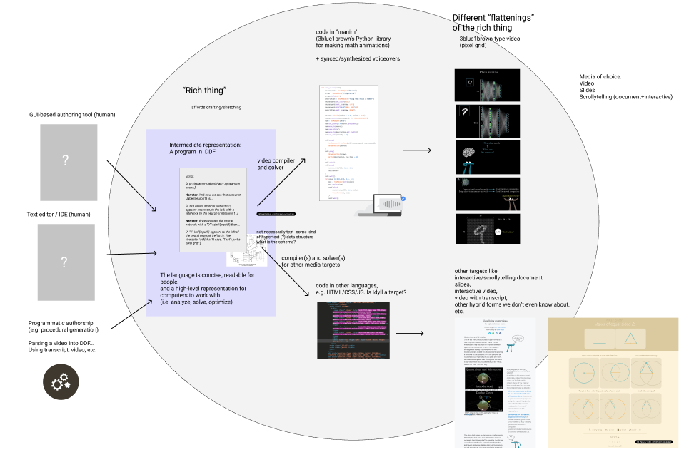

Researchers are designing a Dynamic Document Format (DDF), a new media format that enables authors to naturally express rich media content, along with a toolchain for synthesizing the same content in different formats.
The rise of the personal computer has given rise to a bewildering proliferation of media formats. For example, during a typical day on your computer, you might read a book, watch a movie, listen to a podcast, read the news, or scroll through text posts on a social media platform, all different forms of old media. You might also experience new media; that is, media native to the digital and networked medium, that can't be reproduced in physical form, such as the award-winning New York Times article "Snowfall" and the innovative SB Nation article "17776". Further, hyperlinks, interaction-based acticles, "scrollytelling," and reactive/adaptive educational articles are all examples of rich content that connects and aligns multiple types of media.
The proliferation of media formats and their different affordances results in a huge headache for both media authors and media consumers. Imagine that you are a lecturer trying to explain complex concepts to a class. You would have to choose one of many media formats to target to express the rich learning experience of your course material, which is likely labor-intensive and rules out the possibility of working in other formats. Choices include:
And as a student, you might prefer to learn in a certain modality that your lecturer hasn't provided, such as a podcast or an interactive demo. In a sense, all of these different media formats that content authors can work in are like different shadows on the wall of Plato's cave of the Platonic object that's in one's head. The problem is that the media formats that a computer understands are not rich enough to model the "Platonic object" that's in one's head, so authors are forced to "flatten" it in different ways that all require a lot of effort.
Imagine if you could describe content in a rich way that preserves the connections, references, and alignments between the subparts of your work. This is the goal of researchers who are designing a Dynamic Document Format (DDF), a new media format that enables authors to naturally express rich media content, along with a toolchain for synthesizing the same content in different formats. Working in the DDF ecosystem, the lecturer would only have to write one DDF object and they would get the whole set of materials for free.
This technique, if it succeeds, has the potential to change the daily lives of media creators and consumers. A media creator can just write one DDF object and the computer will do the hard work of transforming it into the media format they want, for example by automatically syncing voiceover to slides for a video or aligning content to scrolling on a webpage. And a media consumer can take the DDF object and pick the format that works best for them. Say that a teacher has sent a student a DDF object for their class, and the student learns best through marking up a webpage. No problem; the student can just use the toolchain to output in a webpage format, and mark it up and remix it themself. Maybe this toolchain can finally help fulfill the long-held promise that the web, and widespread personal computing, offers as a dynamic medium.